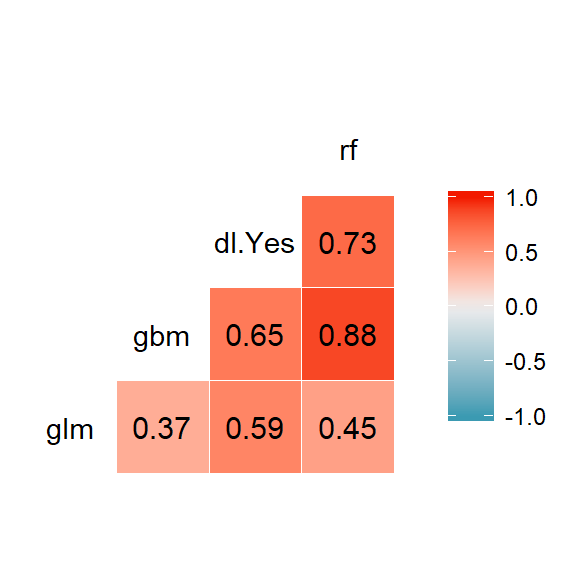
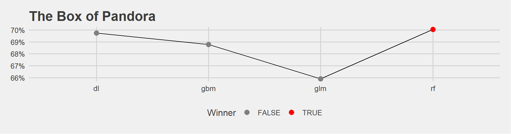
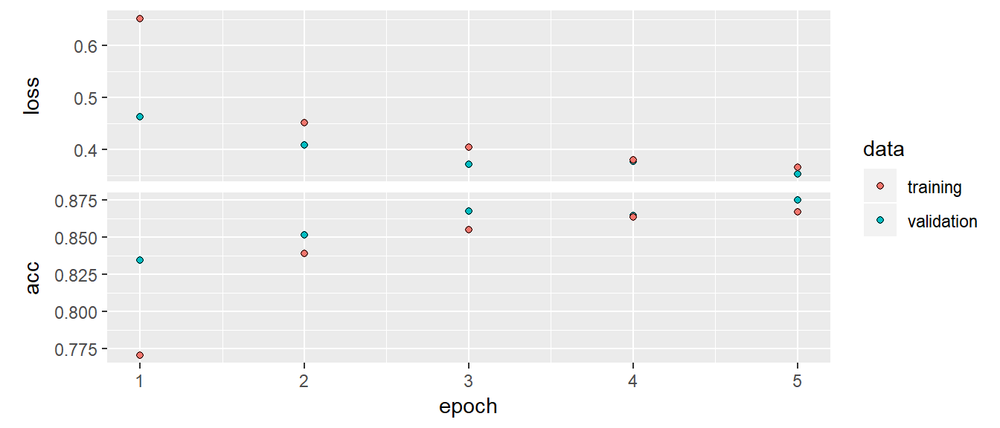
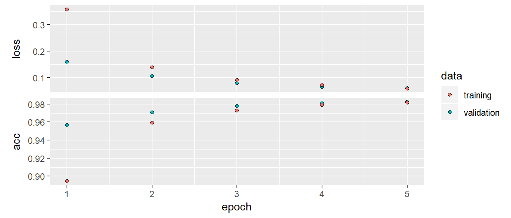

This data is about patients taking an appointment from the doctors. We are going to predict the ‘no-show’ event which occurs when they have an appointment but never showed up. The original data is on Kaggle.
library(ggplot2)
library(data.table)
library(magrittr)
data <- fread("data/noshowdata/no-show-data.csv")
# some data cleaning
data[, c("PatientId", "AppointmentID", "Neighbourhood") := NULL]
setnames(data,
c("No-show",
"Age",
"Gender",
"ScheduledDay",
"AppointmentDay",
"Scholarship",
"Hipertension",
"Diabetes",
"Alcoholism",
"Handcap",
"SMS_received"),
c("no_show",
"age",
"gender",
"scheduled_day",
"appointment_day",
"scholarship",
"hypertension",
"diabetes",
"alcoholism",
"handicap",
"sms_received"))
# for binary prediction, the target variable must be a factor
data[, no_show := factor(no_show, levels = c("Yes", "No"))]
data[, handicap := ifelse(handicap > 0, 1, 0)]
# create new variables
data[, gender := factor(gender)]
data[, scholarship := factor(scholarship)]
data[, hypertension := factor(hypertension)]
data[, alcoholism := factor(alcoholism)]
data[, handicap := factor(handicap)]
data[, scheduled_day := as.Date(scheduled_day)]
data[, appointment_day := as.Date(appointment_day)]
data[, days_since_scheduled := as.integer(appointment_day - scheduled_day)]
# clean up a little bit
data <- data[age %between% c(0, 95)]
data <- data[days_since_scheduled > -1]
data[, c("scheduled_day", "appointment_day", "sms_received") := NULL]
library(h2o)
h2o.init()take a look to remember how the data looked like
data <- data.table(data)
skimr::skim(data)turn it into a h2o dataframe
h2o_data <- as.h2o(data) #
str(h2o_data)Create train / validation / test sets, cutting the data into 5% - 45% - 50% parts.
#3 parts
splitted_data <- h2o.splitFrame(h2o_data,
ratios = c(0.05, 0.45), #3 parts
seed = 123)
data_train <- splitted_data[[1]]
data_valid <- splitted_data[[2]]
data_test <- splitted_data[[3]]
#just cross checking the number of rows
nrow(data_train) #5508 rows
nrow(data_valid) #49793 rows
nrow(data_test) #55174 rows
nrow(data_test) + nrow(data_train) + nrow(data_valid) Train a benchmark model of your choice using h2o (such as random forest, gbm or glm) and evaluate it on the validation set.
Lets get a benchmark of RF:
y <- "no_show"
X <- setdiff(names(h2o_data), y) #take the set difference. i dont drop any other variables
print(X) #cross check if variables are right
benchmark <- h2o.randomForest(X, y, #
training_frame = data_train, #specify training frame
ntrees = 200,#
nfolds = 5, #5 folds
seed = 123)check out the AUC alone, coming from cv
print(h2o.auc(benchmark, xval = TRUE))## [1] 0.6881471now, evaluate it on the validation set.
validation_performances <- list(
"rf" = h2o.auc(h2o.performance(benchmark, newdata = data_valid))) #we could collect more models under a list like this... We will do it during deep learning below
validation_performances## $rf
## [1] 0.7004903Experiment with parameter settings
For all models, supply the validation_frame and use AUC as a stopping metric. Present different model versions and evaluate them on the validation set. Which one performs the best?
dl_1 <- h2o.deeplearning(x = X,
y = y,
training_frame = data_train,
validation_frame = data_valid, #early stop to prevent overfitting
stopping_metric = 'AUC',
reproducible = TRUE, # makes training slower but makes it reproducible
seed = 123)First we play a bit with topology: varying number of layers and nodes within layers…
The default: two hidden layers with 200-200 neurons. Makes sense to experiment with shallower but more neuron or with deeper and less neurons per layer architectures.
dl_2 <- h2o.deeplearning(x = X, #shallow_small_model
y = y,
training_frame = data_train,
validation_frame = data_valid,
stopping_metric = 'AUC',
reproducible = TRUE, # makes training slower but makes it reproducible
hidden = c(50), #this is only 1 hidden layer. 50 node in it.
seed = 123)dl_3 <- h2o.deeplearning(x = X, #shallow_large_model
y = y,
training_frame = data_train,
validation_frame = data_valid,
stopping_metric = 'AUC',
reproducible = TRUE, # makes training slower but makes it reproducible
hidden = c(500), #shallow but large number of neurons.
seed = 123)dl_4 <- h2o.deeplearning(x = X, #deep_small_model
y = y,
training_frame = data_train,
validation_frame = data_valid,
stopping_metric = 'AUC',
reproducible = TRUE, # makes training slower but makes it reproducible
hidden = c(30, 30, 30, 30, 30, 30, 30),#7 layers, 30 nodes in
seed = 123)keeping in mind, there is no one single recipe for good results, try, iterate and see…
dl_5 <- h2o.deeplearning(x = X, #deep_large_model
y = y,
training_frame = data_train,
validation_frame = data_valid,
stopping_metric = 'AUC',
reproducible = TRUE, # makes training slower but makes it reproducible
hidden = c(100, 100, 100, 100, 100),
seed = 123)Now experiment with activation function
…the nonlinear transformative function used. Its defaultis Rectifier.
dl_6 <- h2o.deeplearning(x = X, #tanh_model
y = y,
training_frame = data_train,
validation_frame = data_valid,
stopping_metric = 'AUC',
reproducible = TRUE, #
hidden = c(30, 30, 30, 30, 30),
activation = "Tanh", #similar to the sigmoid. transformed variant of sigmoid
seed = 123)Trying with epochs..
How many times will all training datapoints be used to adjust the model in the course of the optimization (note: early stopping is used by default so there is no guarantee that all epochs will be used).
The algorithm is stachoastic gradient descent. It is a computationally optimum variant. Takes all the points and they are used one by one, once.
dl_7 <- h2o.deeplearning(x = X, #more_epochs_model
y = y,
training_frame = data_train,
validation_frame = data_valid,
stopping_metric = 'AUC',
reproducible = TRUE, #
hidden = c(100, 100, 100),
activation = "Tanh",
epochs = 20, #typically increase this and make it stop earlier.
seed = 123)Now experiment with dropout (both hidden and input layers)
with how large probability will neurons be left out of the model at a step (defaults to 0.5). Have to use “WithDropout” activation to use dropout.
Basically at each update we are shutting down some nodes, randomly. this way we will have a large variaty of networks. A bit similar to random forest idea.
dl_8 <- h2o.deeplearning(x = X, #dropout_model
y = y,
reproducible = T,
training_frame = data_train,
validation_frame = data_valid,
stopping_metric = 'AUC',
hidden = c(100, 100, 100),
activation = "RectifierWithDropout", #withDropout!
hidden_dropout_ratios = c(0.05, 0.05, 0.1), #for each hidden layer give a probability. leave out 10% of the neurons. defaults to 0.5 if you dont specify.
seed = 123)input dropout ratio to drop some input features randomly similar to the one above, this time for imputs..
dl_9 <- h2o.deeplearning(x = X, #input_dropout_model
y = y,
reproducible = T,
training_frame = data_train,
validation_frame = data_valid,
stopping_metric = 'AUC',
hidden = c(100, 100, 100),
input_dropout_ratio = 0.3,
activation = "RectifierWithDropout", #withDropout!
hidden_dropout_ratios = c(0.05, 0.05, 0.1), #for each hidden layer give a probability. leave out 10% of the neurons. defaults to 0.5 if you dont specify.
seed = 123)Experiment with lasso, ridge regularization l1, l2, penalty terms. This is like in the penalized models we have done before.
dl_10 <- h2o.deeplearning(x = X, #regularized_model
y = y,
training_frame = data_train,
validation_frame = data_valid,
stopping_metric = 'AUC',
reproducible = T,
hidden = c(100, 100, 100),
activation = "RectifierWithDropout", #withDropout!
hidden_dropout_ratios = c(0.05, 0.05, 0.1), #for each hidden layer give a probability.
l1 = 0.001,
l2 = 0.001,
seed = 123)Now, early stopping (changing stopping rounds, tolerance) and add also number of epochs
We have our metric (AUC). A moving average is calculated for AUC. Question is how much is enough so that we continue the optimzation. The answer is stopping tolerance. 0.01 is needed in order to continue training in our example below. If it was 0 then any increase would be fine and it would take a long long time.
validation frame. point is performing an optimization ultimately we want our data to perform out of sample. we check this out continusly at each step. then we see if it worths to continue training this.
dl_11 <- h2o.deeplearning(x = X, #early_stopping_model
y = y,
training_frame = data_train,
validation_frame = data_valid,
stopping_metric = "AUC",
reproducible = T,
hidden = c(100, 100, 100),
epochs = 100,
stopping_rounds = 2,
activation = "RectifierWithDropout", #withDropout!
hidden_dropout_ratios = c(0.05, 0.05, 0.1), #for each hidden layer give a probability.
stopping_tolerance = 0.01,
seed = 123)validation_performances <- list(
"benchmark" = h2o.auc(h2o.performance(benchmark, newdata = data_valid)),
"dl_01" = h2o.auc(h2o.performance(dl_1, newdata = data_valid)),
"dl_02" = h2o.auc(h2o.performance(dl_2, newdata = data_valid)),
"dl_03" = h2o.auc(h2o.performance(dl_3, newdata = data_valid)),
"dl_04" = h2o.auc(h2o.performance(dl_4, newdata = data_valid)),
"dl_05" = h2o.auc(h2o.performance(dl_5, newdata = data_valid)),
"dl_06" = h2o.auc(h2o.performance(dl_6, newdata = data_valid)),
"dl_07" = h2o.auc(h2o.performance(dl_7, newdata = data_valid)),
"dl_08" = h2o.auc(h2o.performance(dl_8, newdata = data_valid)),
"dl_09" = h2o.auc(h2o.performance(dl_9, newdata = data_valid)),
"dl_10" = h2o.auc(h2o.performance(dl_10, newdata = data_valid)),
"dl_11" = h2o.auc(h2o.performance(dl_11, newdata = data_valid))
)Make a data frame and present the results
library(tidyr)
library(dplyr)
df <- data.frame(validation_performances) %>%
gather("model", "AUC") %>%
arrange(desc(AUC))
df %>%
head() %>%
pander::pander()| model | AUC |
|---|---|
| dl_04 | 0.7096 |
| dl_01 | 0.7083 |
| dl_08 | 0.7079 |
| dl_06 | 0.7068 |
| dl_07 | 0.7056 |
| dl_05 | 0.7051 |
library(ggplot2)
library(ggthemes)
mycolours <- c("TRUE" = "red", "FALSE" = "grey50")
df %>%
filter(AUC >= 0.69) %>% #sometimes I got models less than 69%, i dont need them
mutate(maxAUC = if_else(AUC == max(AUC), TRUE, FALSE)) %>%
ggplot(aes(model,AUC, group = 1)) +
geom_line() +
geom_point(size = 3, aes(colour = maxAUC)) +
scale_color_manual("Winner", values = mycolours) +
scale_y_continuous(labels=scales::percent) +
ggtitle("The Box of Pandora") +
theme_fivethirtyeight()This was a back and forth process. I was tuning and plotting different possibilities.
Let me save this as a function and use in my future analysis. Because it feels like this kind of comparison will repeat a lot. The function is called “pandora”. It takes a list of model performances, makes a dataframe and gives out visualization. And actually Pandora is a bad name. A better name can be something like: make_performance_comparison_plot_validset(). I just like using the word Pandora from the book Elements of Statistical Learning. There the autor uses this word when he is comparing different models: “Now it is time to open the box of Pandora and see the results…”
Evaluate the model that performs best based on the validation set on the test set.
print(h2o.auc(h2o.performance(dl_4, newdata = data_test)))## [1] 0.7094104We got almost the same result as validation set…
Next task is to apply Stacking. Take the same problem and data splits.
We will build 4 models of different families using cross validation, keeping cross validated predictions. We will evaluate validation set performance of each model.We will also see how large are the correlations of predicted scores of the validation set produced by the base learners.
glm_model <- h2o.glm(
X, y,
training_frame = data_train,
family = "binomial",
alpha = 1,
lambda_search = TRUE,
seed = 123,
nfolds = 5,
keep_cross_validation_predictions = TRUE
)gbm_model <- h2o.gbm(
X, y,
training_frame = data_train,
ntrees = 200,
max_depth = 10,
learn_rate = 0.1,
seed = 123,
nfolds = 5,
keep_cross_validation_predictions = TRUE
)deeplearning_model <- h2o.deeplearning(
X, y,
training_frame = data_train,
hidden = c(32, 8),
seed = 123,
nfolds = 5,
keep_cross_validation_predictions = TRUE
)rf_model <- h2o.randomForest(
X, y,
training_frame = data_train,
ntrees = 200,
seed = 123,
nfolds = 5,
keep_cross_validation_predictions = TRUE
)ensemble_model <- h2o.stackedEnsemble(
X, y,
training_frame = data_train,
base_models = list(glm_model,
gbm_model,
deeplearning_model,
rf_model))# inspect validation set correlations of scores
predictions <- data.table(
"glm" = as.data.frame(h2o.predict(glm_model, newdata = data_valid)$Y)$Y,
"gbm" = as.data.frame(h2o.predict(gbm_model, newdata = data_valid)$Y)$Y,
"dl" = as.data.frame(h2o.predict(deeplearning_model, newdata = data_valid)$Y),
"rf" = as.data.frame(h2o.predict(rf_model, newdata = data_valid)$Y)$Y
)GGally::ggcorr(predictions, label = TRUE, label_round = 2) We can see very clear correlations. Highly correlated ones are moving together. It means when RF is saying “yes”, most of the time GBM is also saying “yes”. They have similarity in predicted probability scores. This kind of relationship is not as much strong between GBM and GLM.
The more uncorrelated predictions are, the more room there is to improve individual models.
valid_performances <- list(
"glm" = h2o.auc(h2o.performance(glm_model, newdata = data_valid)),
"gbm" = h2o.auc(h2o.performance(gbm_model, newdata = data_valid)),
"dl" = h2o.auc(h2o.performance(deeplearning_model, newdata = data_valid)),
"rf" = h2o.auc(h2o.performance(rf_model, newdata = data_valid))
)
#lets use the function we created before: pandora!
pandora(valid_performances) The bests are around 69.6% - 70.04%
# for the ensemble model
print(h2o.auc(h2o.performance(ensemble_model, newdata = data_valid)))## [1] 0.7099261an improvement! better then the individuals.
The baseline meta-learner is a glm model. We can try GBM also:
ensemble_model_gbm <- h2o.stackedEnsemble(
X, y,
training_frame = data_train,
metalearner_algorithm = "gbm",
base_models = list(glm_model,
gbm_model,
deeplearning_model,
rf_model))print(h2o.auc(h2o.performance(ensemble_model_gbm, newdata = data_valid)))## [1] 0.6981105But it gave a lower score. We can maybe give deep learning a chance:
ensemble_model_dl <- h2o.stackedEnsemble(
X, y,
training_frame = data_train,
metalearner_algorithm = "deeplearning",
base_models = list(glm_model,
gbm_model,
deeplearning_model,
rf_model))print(h2o.auc(h2o.performance(ensemble_model_dl, newdata = data_valid)))## [1] 0.7090463The default glm metalearner is giving better result than deeplearning and gbm here. So let’s apply it to or test set:
print(h2o.auc(h2o.performance(ensemble_model, newdata = data_test)))## [1] 0.7092111It is really very closed to the validation set performance of 71.2%!
Take the “Fashion MNIST dataset” where images of fashion items are to be classified in a similar manner to what we saw with handwritten digits. Images are in exactly the same format as we saw digits: 28x28 pixel grayscale images. The task is to build deep neural net models to predict image classes. The goal is to have as accurate classifier as possible: we are using accuracy as a measure of predictive power.
library(keras)
fashion_mnist <- dataset_fashion_mnist()
x_train <- fashion_mnist$train$x
y_train <- fashion_mnist$train$y
x_test <- fashion_mnist$test$x
y_test <- fashion_mnist$test$yshow_mnist_image <- function(x) {
image(1:28, 1:28, t(x)[,nrow(x):1],col=gray((0:255)/255))
}
show_mnist_image(x_train[18, , ])show_mnist_image(x_train[35, , ])show_mnist_image(x_train[100, , ])We have 10 classes again just like the classic MNIST data. This time the classes are items like T-shirt, Bag, Dress, etc.
# reshape
x_train <- array_reshape(x_train, c(dim(x_train)[1], 784))
x_test <- array_reshape(x_test, c(dim(x_test)[1], 784))
# rescale
x_train <- x_train / 255 #between zero and one
x_test <- x_test / 255
# one-hot encoding of the target variable
y_train <- to_categorical(y_train, 10)
y_test <- to_categorical(y_test, 10)model <- keras_model_sequential()
model %>%
layer_dense(units = 128, activation = 'relu', input_shape = c(784)) %>% #layers of neurons, dense means its a dense network. dropout is the probability of dropping. activation .
layer_dropout(rate = 0.3) %>%
layer_dense(units = 10, activation = 'softmax') #units of 10 because we want 10 cat. multiclass classification is done by softmax. input shape is important to give.summary(model)## ___________________________________________________________________________
## Layer (type) Output Shape Param #
## ===========================================================================
## dense_1 (Dense) (None, 128) 100480
## ___________________________________________________________________________
## dropout_1 (Dropout) (None, 128) 0
## ___________________________________________________________________________
## dense_2 (Dense) (None, 10) 1290
## ===========================================================================
## Total params: 101,770
## Trainable params: 101,770
## Non-trainable params: 0
## ___________________________________________________________________________model %>% compile(
loss = 'categorical_crossentropy',
optimizer = optimizer_rmsprop(),
metrics = c('accuracy')
)After I tried 25, 30, 60 and 35 epochs, I ended up using 5 epochs. It started to flatten out after 3 epochs already
history <- model %>% fit(
x_train, y_train, #they are 2 separete objects! train train
epochs = 5, batch_size = 128, #after how many gradient to be computed
validation_split = 0.2
)plot(history)
model %>% evaluate(x_test, y_test)Test set results are acc 85.5% and loss 39%.
It was 86% after 5 epochs. Test set performance is worse. Overall this is not a nice result. I should have played with the parameters better. This dataset is better than classic MNIST.
It makes use of the 2d structure of the original input data, applying filters exploiting the 2d images. In h2o there is no option to use such models by default.
mnist <- dataset_mnist()
x_train <- mnist$train$x
y_train <- mnist$train$y
x_test <- mnist$test$x
y_test <- mnist$test$y
x_train <- array_reshape(x_train, c(nrow(x_train), 28, 28, 1)) #extra dim of 1. at each node we are not having real nubers but bew mageis are buint jeeking 2 dimen features. new artificial features and they are 2 dims.
x_test <- array_reshape(x_test, c(nrow(x_test), 28, 28, 1))
# rescale
x_train <- x_train / 255
x_test <- x_test / 255
# one-hot encoding of the target variable
y_train <- to_categorical(y_train, 10)
y_test <- to_categorical(y_test, 10)it creates the neurons differently. keeps the original image.
cnn_model <- keras_model_sequential()
cnn_model %>%
layer_conv_2d(filters = 32, #
kernel_size = c(3, 3), #28 28 looks up 3 by 3 pixels and applys filters.
activation = 'relu',
input_shape = c(28, 28, 1)) %>%
layer_max_pooling_2d(pool_size = c(2, 2)) %>%
layer_dropout(rate = 0.25) %>%
layer_flatten() %>% #data transformation vectorization of 2 dim into 1.
layer_dense(units = 32, activation = 'relu') %>%
layer_dense(units = 10, activation = 'softmax')summary(cnn_model)## ___________________________________________________________________________
## Layer (type) Output Shape Param #
## ===========================================================================
## conv2d_1 (Conv2D) (None, 26, 26, 32) 320
## ___________________________________________________________________________
## max_pooling2d_1 (MaxPooling2D) (None, 13, 13, 32) 0
## ___________________________________________________________________________
## dropout_2 (Dropout) (None, 13, 13, 32) 0
## ___________________________________________________________________________
## flatten_1 (Flatten) (None, 5408) 0
## ___________________________________________________________________________
## dense_3 (Dense) (None, 32) 173088
## ___________________________________________________________________________
## dense_4 (Dense) (None, 10) 330
## ===========================================================================
## Total params: 173,738
## Trainable params: 173,738
## Non-trainable params: 0
## ___________________________________________________________________________cnn_model %>% compile(
loss = 'categorical_crossentropy',
optimizer = optimizer_rmsprop(),
metrics = c('accuracy')
)history <- cnn_model %>% fit(
x_train, y_train,
epochs = 5,
batch_size = 128,
validation_split = 0.2
)after 5 epochs: val_loss: 0.0571 - val_acc: 0.9840
plot(history)
cnn_model %>% evaluate(x_test, y_test)CNN acc is 98.13% and loss is 5.7%. This is a much better result than deep neural net! A clear victory CNN in image classification task.